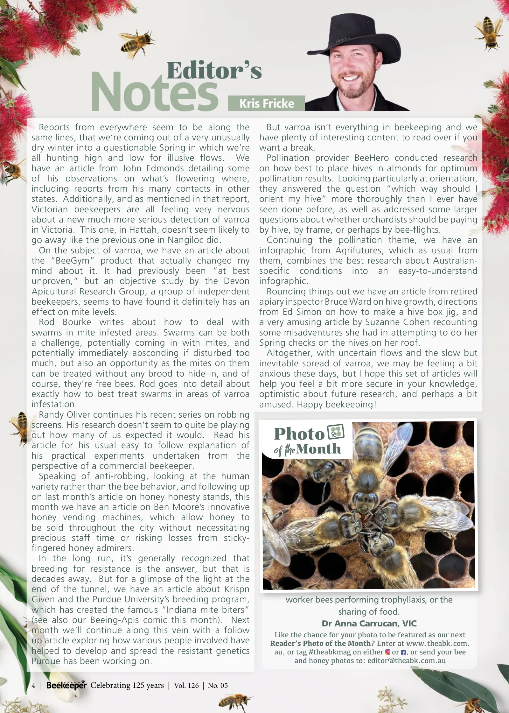

Like the chance for your photo to be featured as our next
Reader’s Photo of the Month? Enter at www.theabk.com.
au, or tag #theabkmag on either or , or send your bee
and honey photos to: editor@theabk.com.au
Reports from everywhere seem to be along the
same lines, that we’re coming out of a very unusually
dry winter into a questionable Spring in which we’re
all hunting high and low for illusive flows. We
have an article from John Edmonds detailing some
of his observations on what’s flowering where,
including reports from his many contacts in other
states. Additionally, and as mentioned in that report,
Victorian beekeepers are all feeling very nervous
about a new much more serious detection of varroa
in Victoria. This one, in Hattah, doesn’t seem likely to
go away like the previous one in Nangiloc did.
On the subject of varroa, we have an article about
the “BeeGym” product that actually changed my
mind about it. It had previously been “at best
unproven,” but an objective study by the Devon
Apicultural Research Group, a group of independent
beekeepers, seems to have found it definitely has an
effect on mite levels.
Rod Bourke writes about how to deal with
swarms in mite infested areas. Swarms can be both
a challenge, potentially coming in with mites, and
potentially immediately absconding if disturbed too
much, but also an opportunity as the mites on them
can be treated without any brood to hide in, and of
course, they’re free bees. Rod goes into detail about
exactly how to best treat swarms in areas of varroa
infestation.
Randy Oliver continues his recent series on robbing
screens. His research doesn’t seem to quite be playing
out how many of us expected it would. Read his
article for his usual easy to follow explanation of
his practical experiments undertaken from the
perspective of a commercial beekeeper.
Speaking of anti-robbing, looking at the human
variety rather than the bee behavior, and following up
on last month’s article on honey honesty stands, this
month we have an article on Ben Moore’s innovative
honey vending machines, which allow honey to
be sold throughout the city without necessitating
precious staff time or risking losses from sticky-
fingered honey admirers.
In the long run, it’s generally recognized that
breeding for resistance is the answer, but that is
decades away. But for a glimpse of the light at the
end of the tunnel, we have an article about Krispn
Given and the Purdue University’s breeding program,
which has created the famous “Indiana mite biters”
(see also our Beeing-Apis comic this month). Next
month we’ll continue along this vein with a follow
up article exploring how various people involved have
helped to develop and spread the resistant genetics
Purdue has been working on.
worker bees performing trophyllaxis, or the
sharing of food.
Dr Anna Carrucan, VIC
But varroa isn’t everything in beekeeping and we
have plenty of interesting content to read over if you
want a break.
Pollination provider BeeHero conducted research
on how best to place hives in almonds for optimum
pollination results. Looking particularly at orientation,
they answered the question “which way should I
orient my hive” more thoroughly than I ever have
seen done before, as well as addressed some larger
questions about whether orchardists should be paying
by hive, by frame, or perhaps by bee-flights.
Continuing the pollination theme, we have an
infographic from Agrifutures, which as usual from
them, combines the best research about Australian-
specific
conditions
into
an
easy-to-understand
infographic.
Rounding things out we have an article from retired
apiary inspector Bruce Ward on hive growth, directions
from Ed Simon on how to make a hive box jig, and
a very amusing article by Suzanne Cohen recounting
some misadventures she had in attempting to do her
Spring checks on the hives on her roof.
Altogether, with uncertain flows and the slow but
inevitable spread of varroa, we may be feeling a bit
anxious these days, but I hope this set of articles will
help you feel a bit more secure in your knowledge,
optimistic about future research, and perhaps a bit
amused. Happy beekeeping!
4 |
Celebrating 125 years | Vol. 126 | No. 05